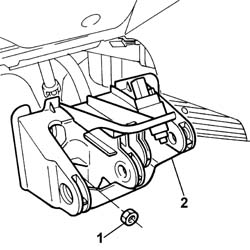

3330B38 pedal unit mount - r r
- Path
- Procedures > 33 BRAKING SYSTEM > 3330 HYDRAULIC BRAKING SYSTEM > 3330B PEDAL UNIT > 3330B38 pedal unit mount - r r
- Kind
- repair procedure (removal / refitting; the operation number is the code)
- Applies to
- all engines; all production periods
- Interactive page
- https://sloeber94.github.io/elrnDB-fPnd/en/#/2752728
Applies to: all engines; all production periods
 Removing
Removing
 Refitting
Refitting3330B22 brake pedal - r+r manual gearbox versions
1. Undo the nuts securing the pedal unit to the body and and brake servo.
2. Remove the pedal mount from its seat.

Applies to: all engines; all production periods
Refitting
RemovingFit the pedal mount in its seat.
Tighten the nuts securing the pedal to the brake servo and body to torque.
 | Fastening | Component | Ø | Value (daNm) |
|---|---|---|---|---|
- | Nut | PEDAL MOUNT | M8 | 2.2 |